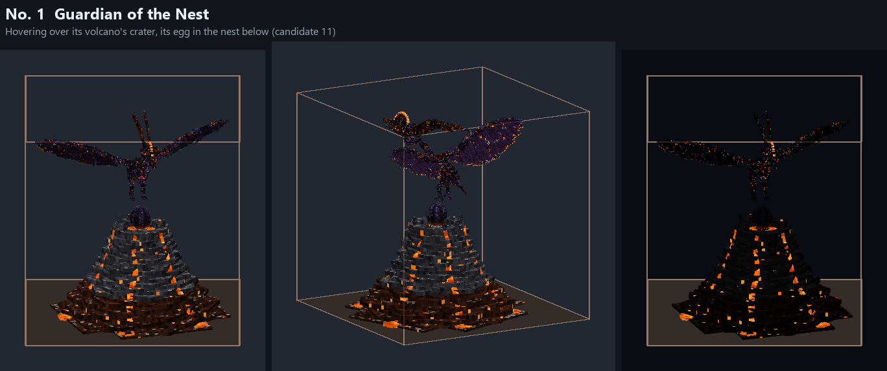
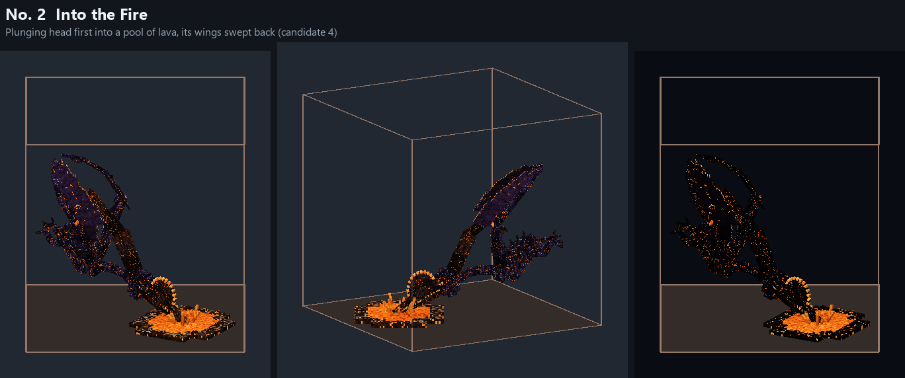
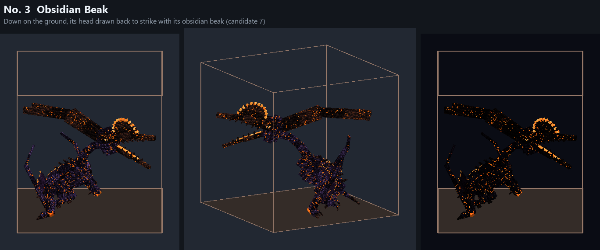
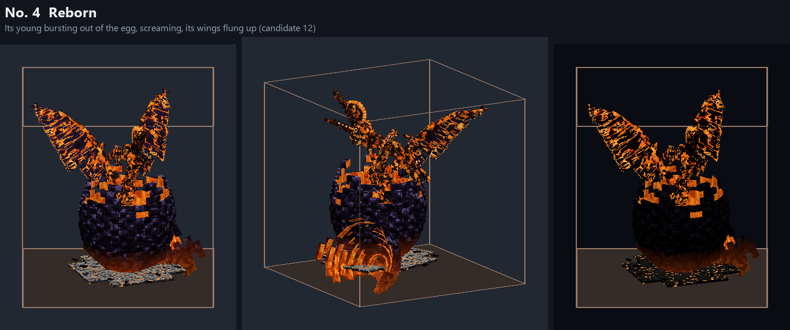
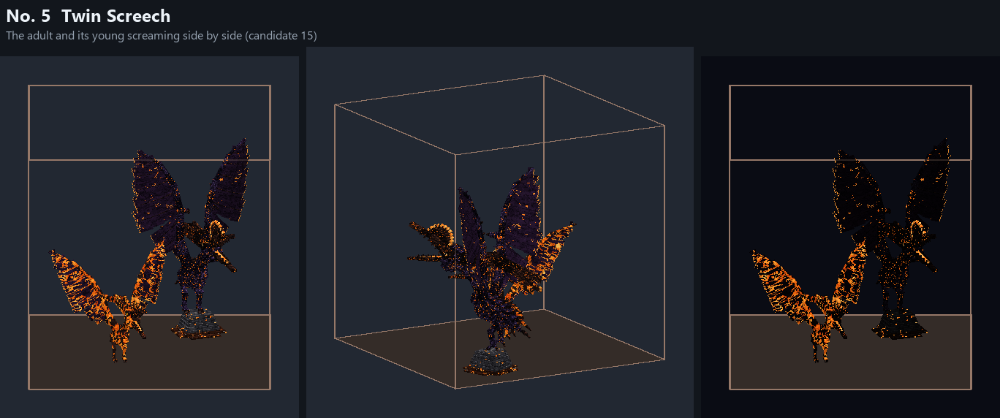

The Emberdactyl's trophies (the five in the game)
The five in the game, the user's pick of fifteen candidates (in candidates/), in the order of its fight. In the game: /dross showcase trophies emberdactyl.
No. 1 Guardian of the Nest
Hovering over its volcano's crater, its egg in the nest below (candidate 11)

No. 2 Into the Fire
Plunging head first into a pool of lava, its wings swept back (candidate 4)

No. 3 Obsidian Beak
Down on the ground, its head drawn back to strike with its obsidian beak (candidate 7)

No. 4 Reborn
Its young bursting out of the egg, screaming, its wings flung up (candidate 12)

No. 5 Twin Screech
The adult and its young screaming side by side (candidate 15)
